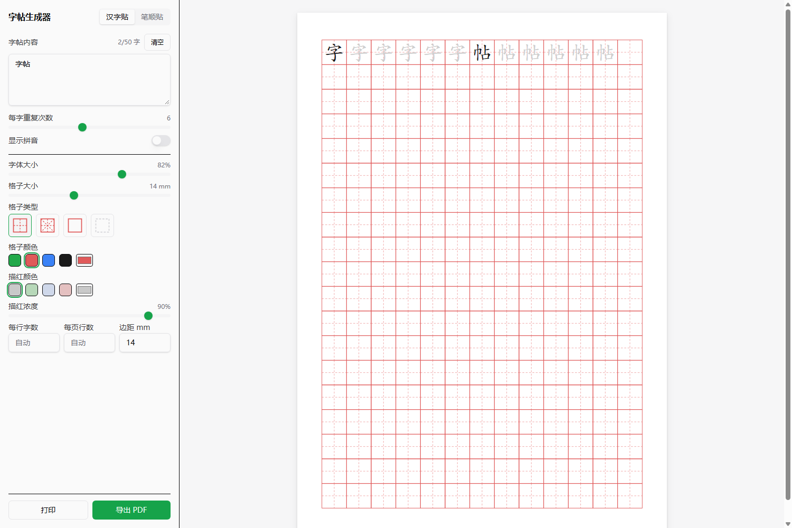
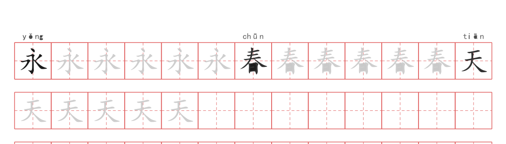
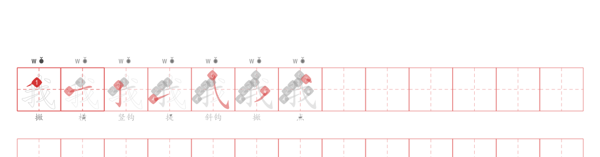

输入汉字，几秒钟就有一份排好版的字帖：田字格、笔顺分解、描红临摹，连拼音都帮你标好。直接打印，今天就能开练。
Windows 10 / 11 · 安装包约 10 MB · 无需注册

不用再到处搜「一年级生字表字帖」——孩子学到哪课，就打哪课的字。
课本生字当场成帖，描红、临摹、空白练习一应俱全。每天十分钟，作业本上的字悄悄变好看。
全班统一格子、统一描红浓度，一次生成整课生字的字帖。A4 纸直接印，随堂发放。
写好字先走对笔顺。每一笔怎么起、怎么收，逐步分解看得清清楚楚，纠正顺手乱写的习惯。
一个字在格子里重复成排：第一个是示范，后面全是浅色描红，越写越淡、越写越稳，最后留白自己写。

每个字拆成一步一步：写完一笔亮一笔，红色标出当前笔画，配上序号和「横、竖、撇、捺」的名称，孩子照着写就不会错。

左边调、右边看，改一处立刻刷新，不用来回试打印。
田字格、米字格、方格、空白格，低年级到高年级都有合适的
浅灰、浅绿、浅蓝、浅粉任选，深浅浓度也能微调
自动给每个字标上拼音，认字写字一起练
字大一点好上手，字小一点更省纸，滑一滑就好
每行几个字、每页几行都能指定，版面整整齐齐
一次输入整课生字，一口气生成，不用一个一个来
按 A4 排版，接上打印机就能出，不用再调格式
存成 PDF 文件，发给家长群、打印店都方便
汉字按真实字形打印，放大多少倍边缘都不糊
不联网也能用，输入的内容不会离开这台电脑
把今天要练的字打进去，一次最多 50 个
选格子、调描红，右边预览立等可看
直接打印或存成 PDF，墨迹未干就能写